A live workshop experience for Church & Dwight.
Monday, November 9, 2026, 10:00 to 12:00.
Your brief asks us to start with discovery: say the experience back in our own words, list every open question, and propose two visual directions as style frames. Nothing gets built until you approve a direction.
So this pack is exactly that. The frames are real renders, not mood boards: the glass, the light and the caustics come from the same WebGL shaders that would run on the stage, which is also our first test that the ambition is buildable.
03 What we heard
04 The morning at a glance
05 Four surfaces, one session
06 The stack, confirmed
07 The idea behind both directions
08 Direction A, Laboratory Light
16 Direction B, After Hours
24 Side by side
25 Our recommendation
26 Motion tests
27 Open questions
30 Next steps
On Monday, November 9, from 10:00 to 12:00 in Darwin, The Flavor Factory leads about ten people from Church & Dwight through two hours that answer, in order, the four things Ross's invitation asked for. It is not a presentation. It is one live environment on four synchronized surfaces, and everything the room does becomes part of a document they leave with.
We open by showing the room its own brief as our agenda. Act I lays out what is changing: the climb, the 14% versus 65% gap, a portfolio that has mastered mint, and seven signals the room narrows to three. Act II is Flavor School, where Alex teaches how flavor works and how it survives OXYD-8.
Act III is the territory flight: seven worlds, a blind tasting of four prototypes scored on phones, and a chip vote. Act IV mixes the teams to build concepts on a shared canvas and pitch them as posters the system designs. Act V places the winners on a Now, Next, Future board, drafts a 2027 flavor calendar and edits a seven rule Flavor Code. At 11:55 the Playbook v0.1 assembles itself on screen with their names on the cover. The PDF exists by 12:05.
It has to survive a real conference room: unknown projector, unknown Wi-Fi, a hard stop at noon. So the stage runs from a local build, every vote has a paper path, every 3D scene has a video fallback, and the console recovers anything in one click.
Before: the arrival loop from 9:15, and a three question pulse survey sent around October 26 that opens the session.
After: the lunch loop in the colors of the territories the room chose, and Playbook v1.0 within eight business days.
The cinematic show: story, data, reveals and live results. 16:9 at 1080p and 4K. Runs fully offline from a local build on the presenter laptop.
Scan the QR, type a first name. Voting, tasting scorecards, the concept canvas, reactions. Always mirrors the scene. Remote attendees get the same view plus a stage mirror.
Scene control, timers, open and lock votes, reveal, spotlight, speaker notes, participant health, Executive Mode, emergency jumps and Paper Mode.
Assembled from every vote, rating, concept and placement into a designed book. Web version plus a server-side PDF in A4 and US Letter.
An XState scene machine that Console advances and Stage and Room subscribe to. A managed real-time layer under 300 ms from tap to stage. Every interaction written to one session record, which is what the Playbook is generated from. Export as JSON and CSV, wipe in one click.
| Layer | Your brief | Our proposal | Why |
|---|---|---|---|
| App | Next.js App Router, TypeScript, Tailwind | Same | |
| Motion | Motion (Framer Motion) and GSAP | Same | |
| 3D | React Three Fiber, drei, postprocessing | Same, plus our own light shaders | Dispersion, caustics and the dichroic glow are the concept. Stock materials do not do them. These frames already run on those shaders. |
| Scene state | XState | Same (v5) | |
| Real-time | Supabase, Liveblocks or PartyKit | Supabase (Realtime plus Postgres) through the Vercel Marketplace, under a TFF account | A durable session record, SQL for the Playbook, simple CSV and JSON export and a one-click wipe. The Marketplace wires the keys into Vercel for us. |
| Access | Password gate on all surfaces | App-level gate in Next.js middleware. Phones join through a signed QR token | Vercel's own password protection is a paid add-on. Nobody should type a password on a phone at 10:00. |
| Server-side | Headless Chromium in a Vercel Function printing the Playbook web route | The PDF and the web version can never drift apart. | |
| Type | Fraunces, Inter or Geist, a mono | Newsreader, Geist and Geist Mono, self-hosted | Newsreader has a cleaner lowercase f than Fraunces and optical sizes for the stage. Geist holds up at stage sizes. |
| Fallbacks | Local build, video, PDF | Same. Every video as H.264 MP4, yuv420p | It plays in Edge on Windows. We just fixed exactly this on the current opening film. |
| Quality gates | Dash test, WCAG 2.2 AA, visual regression | Same. The dash check runs as a pre-commit hook and in CI | See the scope question on page 27. |
TheraBreath's rinse is clear and dye-free. So everything here starts clear: a drop, a glass, a swirl. Color only appears when light passes through it and splits into the spectrum of whichever territory we are in.
It carries the whole argument. In the gap scene, the empty 86% of the TheraBreath glass does not fill with liquid, it fills with light: the flavors still to come. And the rising bubbles that carry each name echo the rising dots in The Flavor Factory's own logo.
Warm territories set in Newsreader italic, cool ones upright and crisp, so the headline itself gets warmer or cooler.
TheraBreath orange appears once per screen, like the cap: the live dot, the primary action. Sampled from official assets when you send them.
Bright and airy. A Cloud Dancer base, ink type, glass and light. Precise editorial layouts with hairline data, like a scientific journal designed by Pentagram. It reads in a lit room and survives any projector.
Bright field: clear glass defined by dark reflections, soft window light, pastel spectra and dichroic color on white.
Crystalline and exact. Data draws itself in hairlines. Liquids settle rather than splash.
Most of the session, and any room with a projector or daylight.
The clear drop turns slowly over its own caustic. Each person who joins sends a bubble up through it carrying their first name. At the tip it dissolves into light.
The emotional center of the business case. The category glass fills to 65%, the TheraBreath glass to 14%. Then the empty space fills with light, not liquid: dichroic color, the flavors still to come.
Eleven adult rinse flavors cluster in classic mint. The quadrant nobody owns, adventurous character at gentle intensity, glows. Clearly labeled as our perspective, not panel data.
Three illustrative cooling curves on a log time axis: classic menthol, a long-lasting cooler and a signature blend. Frost grows along the signature curve.
Warm Meets Cool. The headline changes temperature: Warm is soft and italic, Cool is crisp. The photograph is a generated look target; final imagery is art directed per territory.
The phone always mirrors the scene. One-thumb screens, droplet sliders that fill as you rate, chips that pop. One orange element per screen: the action.
The book assembles from the session: the cover names the co-authors, the chapters come from the votes, the concept cards from the canvas. Inner pages show rehearsal data.
Deep ink, a single shaft of light, luminous liquids and caustics. Cinematic and dramatic, like the lab after everyone has gone home. Best on an LED or LCD panel in a dimmed room.
Dark field: rim-lit glass, a visible shaft, a converging spectral cone under the drop, glowing spectra.
Slower and warmer. Reveals come out of the dark. Light is the transition.
Flavor School, the big reveals and the close. Risky on a projector in a lit room.
A single shaft of light passes through the drop, narrows into a spectral cone and pools on the floor as a caustic. Names rise through the drop as people join.
Rim-lit glasses on a dark mirror. The empty 86% glows with drifting spectral light.
The mint cluster glows glacier blue. The white space is a nebula of spectral light.
Luminous curves and frost on ink. This is where B earns its place: a lab after hours, focused and cinematic.
Embers on one side, frost on the other, meeting in the pod. Generated look target, as in A.
The same screens in dark mode. Droplets glow as they fill.
The printed book glows out of the dark. The most theatrical version of the close.
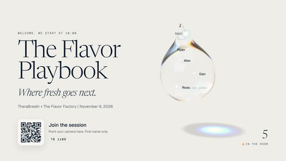
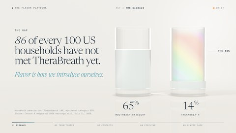
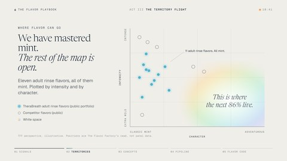
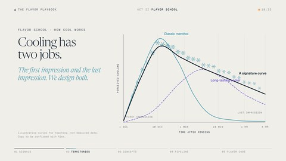
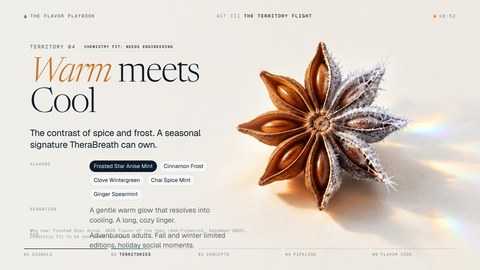
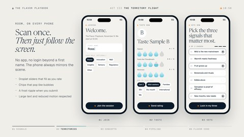
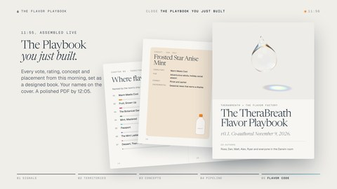
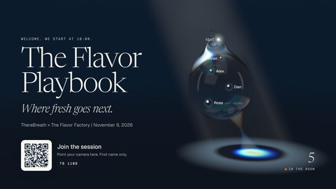
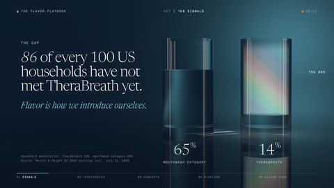
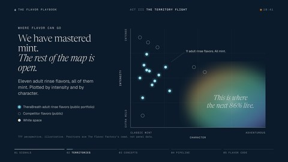
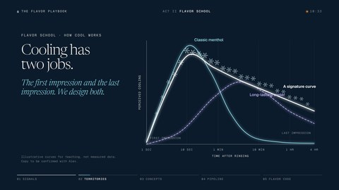
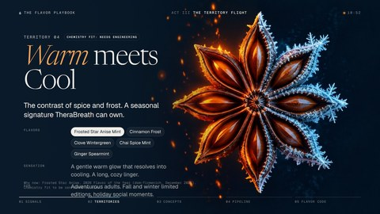
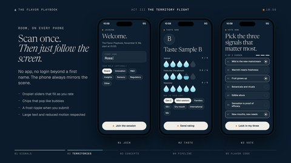
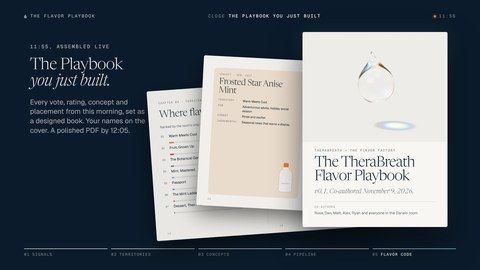
Bright, precise and calm. It survives a projector in a lit room, keeps data legible and feels like a flavor lab at its most rigorous. Its risk is feeling too restrained for the big moments.
Dramatic and cinematic, with light you can see. It makes the reveals unforgettable. Its risk is contrast: on a projector in daylight, dark scenes turn muddy.
Light, legible scenes carry the working session. Dark scenes are rationed, so every switch to B signals that something matters.
We never cut between A and B. The room dims as light gathers into the drop, and brightens as it releases. Light is the transition.
The display in Darwin. If it is a projector, we keep B to Flavor School and the close. If it is an LED or LCD panel, B can open the day too.
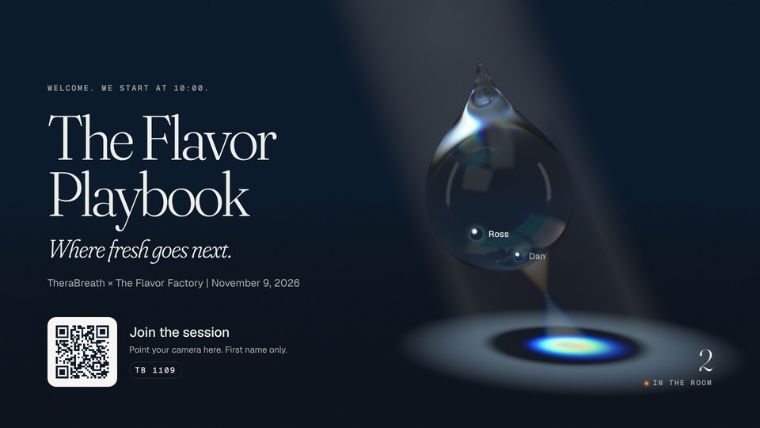
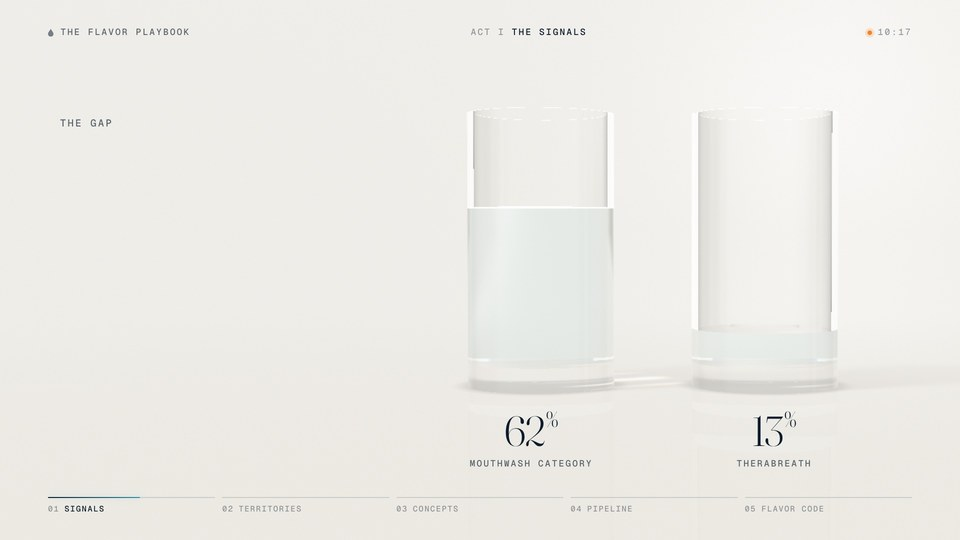
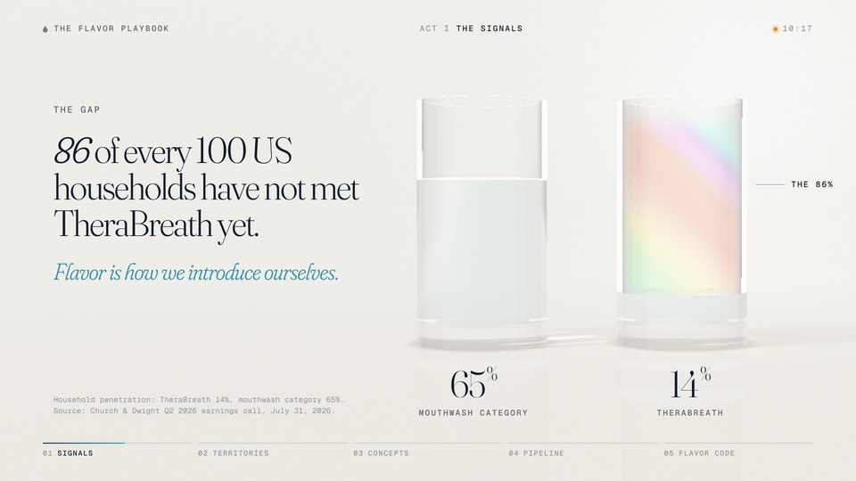
The drop turns in the shaft of light. Five names join one after another, rise through the drop and burst into light at the tip. The counter follows.
Both glasses fill while the numbers count up to 65% and 14%. After a beat, the empty 86% blooms into dichroic light and the headline arrives.
A, B, or the hybrid we recommend. Notes on any frame are welcome.
A projector or an LED or LCD panel, and how bright the room is. It decides how much of B we can use.
Through the Vercel Marketplace. It holds session data only and we wipe it after the Playbook ships.
We propose a new playbook app in the WixTheWolf/Therabreath repo, deployed as its own Vercel project. We cannot create Vercel projects from here, so you would create it in two minutes and we wire everything else.
One password for Stage, Console and Playbook, held by the TFF team. Phones join by QR token only. Will anyone join on Teams?
The current pre-brief promises six sealed territories. This brief has seven different ones. If the pre-brief is already out, the two stories need to connect.
Scene 4 needs answers before the day. The current pre-brief deliberately has no links. We suggest a separate survey link around October 26.
Anywhere in the repo means 34 existing lines in the older site, deck and pre-brief, plus third-party libraries. We suggest checking the new app and our own files, and excluding vendored code.
The ledger source (MMA Smarties and WARC) describes 5.6% to 15.6% as the Swishy Time campaign's growth, not the acquisition. We suggest "Before Swishy Time: 5.6%."
Not supported as written. The ledger's "fastest-growing mouthwash in Canada, Mexico, the UK and Australia" is safe to use. But it has no comparison with the US, and its only international figure (up 9.1%) is Church & Dwight's total international organic sales.
Household penetration usually counts buying in a period, often 52 weeks, not lifetime trial, and their insights team will know it. Please confirm the definition; we can keep the line with a precise source line.
"The no burn promise is now being copied" (Signal 1) and "Listerine's candy-leaning drops" (Seed 3) read as characterizations. Suggested: "Mild is now a category claim" and "a fruit mint made for adults."
The ledger says only "public press coverage." Each item on a data scene needs its own source line: publication and date for Lucky Charms, Reese's, KFC, Miffy and The Simpsons.
Attributed to TheraBreath but not in the ledger. We need the source.
Several variants (Rainforest Mint, Dry Mouth Tingling Mint, the lozenges, gum and kids flavors) have no ledger line. We suggest "TheraBreath product listings, accessed [date]" and a check for renamed or discontinued items.
They sit in the adventurous, gentle corner, which is exactly the glowing white space. Our frame plots adult rinses only. Plot kids separately?
At three minute pitches the act adds up to 30 minutes exactly. We suggest two minute pitches, plus a time bank on Console that shows ahead or behind.
The final attendee list and roles, and who from TFF travels.
Address, display and inputs, seating, power, guest Wi-Fi, and whether we may present from our own laptop.
Is live tasting of rinse prototypes permitted (cups, spit cups, water)? Which four samples, with which codes?
Alex's sign-off on Scenes 18 to 22, the molecule set and every chemistry fit badge.
The official TheraBreath logo, including a reversed version for dark scenes, the official orange, and TFF fonts.
The three next steps and their dates for Scene 42, and appetite for Church & Dwight family crossovers (Seed 13).
Church & Dwight phones and guest Wi-Fi may block unknown domains or real-time connections. Could Ross test the join link on a company phone by October 30? We bring a 5G hotspot either way.
The offline build is not available on their machine. We cache the stage in the browser, but our own laptop over HDMI or USB-C is the safer plan.
Is Church & Dwight comfortable with attendees listed as co-authors in the Playbook PDF?
Vendor, quantities and delivery address, plus the vendor's color profile for CMYK files. Final files are due October 28.
With a direction and the eight decisions on page 27, we move straight to the full storyboard and the alpha. Everything else on pages 28 and 29 can arrive while we build.
| Date | Milestone |
|---|---|
| Sep 30 | This discovery pack: restatement, questions, two directions |
| Oct 9 | Storyboard for every scene in the chosen direction |
| Oct 16 | Alpha: arrival, Scenes 1 to 17, join, live voting, Console basics |
| Oct 23 | Beta: all scenes, tasting, canvas, dot vote, pipeline, Playbook v1 |
| Oct 26 | Pulse survey live |
| Oct 28 | Print files to the vendor |
| Oct 30 | Full rehearsal with the simulator, timed |
| Nov 3 | Release candidate, offline build, fallbacks |
| Nov 6 | Content freeze |
| Nov 9 | Live, with us on standby from 9:00 |